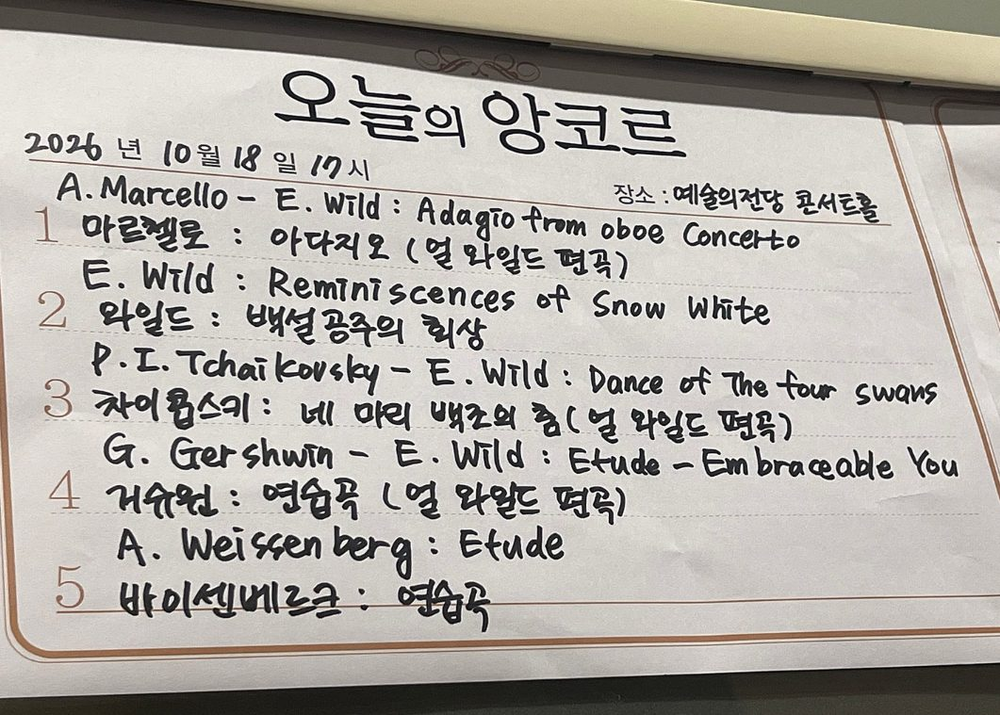
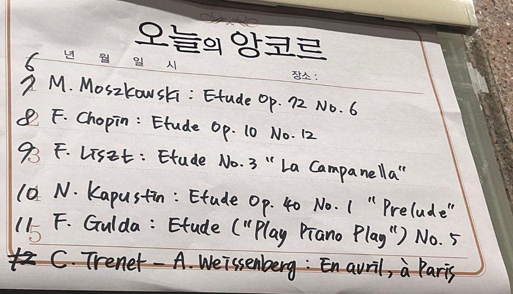

예술의전당 등에서 관람할 관현악·콘서트 프로그램을 미리 예습합니다. 곡별 감상 포인트 · 명반 · 검증된 유튜브 실연 영상을 담았습니다. 관람 예정 공연은 상단에 표시됩니다.
🚗 다음 공연(10/18 손열음) 듣는 예습 대본 — 운전·출퇴근 중에 귀로만 공부하는 여섯 편(약 22분). → 열기
관람 예정
관람 예정 · 예술의전당 콘서트홀 · 2026-11-28(토) 17:00
KBS교향악단 제832회 정기연주회 로버트 스파노 지휘 · 첼로 스티븐 이설리스
지휘 로버트 스파노 (Robert Spano) · 첼로 스티븐 이설리스 (Steven Isserlis)
미국 지휘자 로버트 스파노가 KBS교향악단을 지휘하고, 영국 첼리스트 스티븐 이설리스가 슈만 첼로 협주곡을 협연합니다. 이설리스는 이 곡을 다룬 다큐멘터리 'Schumann's Lost Romance'를 만들 만큼 슈만 해석으로 이름난 연주자. 현악의 비가(바버) → 낭만 협주곡(슈만) → 화려한 관현악 동화(림스키-코르사코프)로 이어지는 구성입니다.
※ 아래 곡목·출연진은 KBS교향악단 공식 공연 페이지와 일치합니다(2026-09-14 확인). 세부 사항은 변경될 수 있습니다.
🎼 프로그램 · 감상 포인트
순서
작곡가
곡
들을 것
1부
바버
현을 위한 아다지오
현악사중주 Op.11의 느린 악장을 현악 합주로 편곡한 곡. 한 선율이 천천히 쌓여 절정에 이른 뒤 침묵으로 끊기는 순간이 핵심
협연
슈만
첼로 협주곡 a단조 Op.129 (이설리스)
세 악장이 쉼 없이 이어집니다. 화려한 기교보다 첼로가 '노래하듯' 말을 거는 서정이 중심
2부
림스키-코르사코프
셰에라자데 Op.35
'천일야화'를 그린 4악장 교향 모음곡. 묵직한 금관의 술탄 주제와, 하프 위에 흐르는 독주 바이올린(셰에라자데)의 대화를 따라가세요
🎯 관람 팁: 셰에라자데는 악장마다 독주 바이올린 선율이 이야기꾼처럼 다시 등장합니다 — 이 선율이 들리면 '새 이야기가 시작된다'는 신호. 슈만 협주곡은 악장 사이에 멈추지 않으니 곡이 완전히 끝날 때까지 박수를 아껴두세요.
욘 스토르고르스 & BBC 필하모닉 BBC Philharmonic · John Storgårds · 바이올린 김봄소리
지휘 욘 스토르고르스 (BBC 필하모닉 상임지휘자) · 바이올린 김봄소리
영국 맨체스터에 기반을 둔 BBC 필하모닉이 2015년 이후 11년 만에 내한합니다(다른 나라를 거치지 않는 한국 단독 투어 — 서울 뒤 부산 12/15·대구 12/16). 핀란드 출신으로 바이올리니스트에서 지휘자로 전향한 욘 스토르고르스가 2022년부터 이끌고 있고, 2023년 BBC 프롬스에서 처음 호흡을 맞춘 뒤 여러 차례 협연해온 도이치그라모폰 전속 바이올리니스트 김봄소리가 함께합니다.
※ 아래 곡목·출연진은 공연 발표 보도(2026-09-08) 기준입니다. 예술의전당 공식 프로그램북 공개 시 재확인이 필요합니다.
🎼 프로그램 · 감상 포인트
순서
작곡가
곡
들을 것
1부
파니 멘델스존
서곡 다장조
펠릭스 멘델스존의 누나 파니가 남긴 유일한 관현악 서곡. 동생 못지않은 밝고 균형 잡힌 고전-낭만 양식
협연
차이콥스키
바이올린 협주곡 라장조 Op.35 (김봄소리)
1악장의 넓은 서정과 카덴차, 2악장 '칸초네타'의 애수, 3악장 러시아 춤곡풍 질주
2부
베토벤
교향곡 7번 가장조 Op.92
'리듬의 화신'. 2악장 알레그레토의 반복 리듬과 4악장의 폭발적 피날레
🎯 관람 팁: 베토벤 7번은 7/4에 이미 실연으로 들은 곡입니다 — 아래 7/4 공연 카드의 악장별 감상 포인트를 복습하고 가면, 다른 악단·지휘자의 해석 차이(템포·리듬감)를 비교하는 재미가 생깁니다. 차이콥스키 협주곡은 1악장이 끝나면 박수가 자주 터지지만, 원칙은 전곡이 끝난 뒤입니다.
2011년 차이콥스키 콩쿠르 준우승 이후 세계 무대를 누벼온 피아니스트 손열음의 리사이틀. 이번 프로그램은 전설적인 피아니스트들이 직접 작곡·편곡한 소품을 모은 독특한 구성입니다 — 1부 파데레프스키·프리드만·호프만·체르카스키·카자드쉬, 2부는 헤스·비트겐슈타인·켐프가 편곡한 바흐로 시작해 켐프·기제킹·슈나벨·리파티·굴다·바이센베르크·얼 와일드로 이어집니다. '피아니스트가 남긴, 피아니스트를 위한 곡'을 이어 부르는 손열음다운 지적이고 화려한 밤입니다.
※ 아래는 예술의전당 공식 프로그램입니다(공식 공연 페이지 곡목·순서를 옮김, 2026-10-12 재확인 — 9월 확인본에서 바흐 편곡 3곡·리파티가 추가되고 슈나벨이 2곡으로 바뀜). 순서는 공연 당일 변경될 수 있습니다.
※ ◆ 손열음 본인 녹음(바이센베르크 연습곡은 음반 《PlayWrite》의 선공개 트랙), ★ 얼 와일드 본인 연주. 나머지는 한국 애플뮤직에서 재생 가능한 다른 연주자의 녹음입니다(2026-10-18 확인). 안내판 두 번째 장은 번호가 6~12로 고쳐 적혀 있으나, 실제 곡은 첫 장 5곡 + 둘째 장 6곡 = 11곡입니다.

오늘의 앙코르 1~5 (예술의전당 로비, 직접 촬영)

오늘의 앙코르 6~11 (예술의전당 로비, 직접 촬영)
🎯 관람 포인트 — 이것만 알고 가면 된다
구간
들을 곳
1부 · 파데레프스키·프리드만
미뉴에트·사라방드·마주르카 같은 옛 춤곡. 마주르카는 3박자가 균등하지 않게 흔들리는 리듬, 프리드만의 '음악 상자'는 태엽 장난감 소리를 흉내 낸 곡(제목 기준).
1부 · 호프만 → 체르카스키
스승과 마지막 제자의 전주곡이 연달아 나온다. 1분이 안 되는 스승의 곡 뒤에 3분 남짓한 제자의 곡 — 한 묶음으로 비교.
1부 끝 · 카자드쉬 토카타
쉬지 않고 달리는 음표. 속도보다 음이 고르고 또렷한지. 이 곡이 끝나면 인터미션.
2부 시작 · 바흐 편곡 세 곡
같은 바흐를 헤스 → 비트겐슈타인 → 켐프가 각자 피아노로 옮긴 판. 헤스·비트겐슈타인 편곡은 손열음 본인 녹음으로 미리 들을 수 있다.
2부 · 왼손 곡 두 곡
비트겐슈타인 편곡 시칠리아노와 리파티 소나티나 2악장은 왼손만으로 치는 곡. 좌석에서 손이 보이면 꼭 확인.
2부 · 기제킹 → 슈나벨 → 기제킹
재즈 시대 춤곡(폭스트롯·찰스턴)을 두 대가가 어떻게 다르게 썼는지 샌드위치 비교. 곡이 짧게 이어지니 박수는 아껴 두자.
마지막 · 얼 와일드 토카타
'리키 마틴 풍으로'. 1부를 닫은 카자드쉬 토카타와 두 토카타 대비 — 프랑스풍으로 시작해 라틴 팝으로 끝나는 밤.
※ 곡이 어떻게 들릴지에 관한 부분은 곡 제목·형식에서 짐작한 것입니다. 박수는 연주자가 손을 무릎에 내릴 때.
🚗 운전하며 듣는 예습 — 이 공연을 귀로만 공부할 수 있게 쓴 대본 여섯 편(약 22분)을 따로 두었습니다. 휴대폰 브라우저의 읽어주기 기능으로 들으세요. → 듣는 예습 대본 열기
🎹 이 공연의 14인 — 모두 전설적인 '연주자'였다
이 프로그램의 14명은 작곡가로 이름난 사람들이 아니라, 20세기를 대표하는 피아니스트들입니다. 즉 '연주자가 쓰고 옮긴 곡'을 모은 밤입니다. 각자가 어떤 연주로 유명했는지 알고 들으면, 그 사람이 쓴 곡이 전혀 다르게 들립니다.
※ ★ 표시는 작곡·편곡자 본인이 직접 연주한 녹음(파데레프스키·체르카스키·켐프·굴다·얼 와일드), ◆ 표시는 손열음 본인의 녹음입니다. 위 음원은 한국 애플뮤직에서 재생 가능한 것만 골랐습니다(바흐 편곡 3곡·리파티는 2026-10-12 확인). 켐프 본인 녹음은 트랙명에 BWV 734만 표기돼 있어, 공식 프로그램 제목(BWV 307 & 734)과 같은 이딜 비레 녹음을 먼저 두었습니다. 슈나벨 '춤곡 모음곡'의 Erste Rast는 음반에 영어 제목(First Pause)으로 표기돼 있습니다.
※ 내 애플뮤직 플레이리스트 '손열음공연_261018_2'에 위 공식 순서 22곡을 그대로 담았습니다(23곡·1시간 22분 — 12번 이딜 비레 다음 13번에 켐프 본인 연주 BWV 734를 비교용으로 추가). 이전 플레이리스트 '손열음공연 261018'(19곡)은 바뀌기 전 곡목입니다.
※ 손열음의 새 음반 《PlayWrite》가 이 '연주자가 쓴 곡' 프로그램과 같은 기획으로 알려져 있습니다. 애플뮤직에 발매 예정(2027-03-26)으로만 등록돼 있어 아직 재생되지 않으며, 수록곡이 이번 곡목과 같은지는 발매 때 확인이 필요합니다.
🎼 프로그램 곡 영상 (유튜브)
프로그램 곡 · 편곡자 본인
바흐–헤스 '예수, 인간 소망의 기쁨' — 마이라 헤스 본인 연주 (1957년 녹음 음원)
8월 829회에 이어 정명훈이 다시 KBS교향악단을 지휘하는 말러 프로그램. 전반은 뤼케르트의 시에 붙인 가곡 다섯 곡, 후반은 소프라노가 마지막 악장에서 '천상의 삶'을 노래하는 교향곡 4번입니다. 두 곡 모두 소프라노 카르크가 부릅니다. 카르크는 잘츠부르크 페스티벌의 모차르트 배역으로 이름을 알린 독일 소프라노로, 말러 가곡 음반(Mahler: Lieder, 2020)을 냈고 교향곡 4번도 여러 번 노래했습니다.
※ 아래는 실제 관람한 공연의 프로그램입니다(공식 공연 안내 기준).
🎼 프로그램 · 감상 포인트
순서
곡
원제
들을 것
1부 ①
내 노래를 엿보지 마오
Blicke mir nicht in die Lieder!
쉬지 않고 도는 잔잔한 음형. 만드는 중인 노래를 보여주기 싫다는 작곡가 자신의 이야기
1부 ②
나는 보리수 향기를 맡았네
Ich atmet' einen linden Duft!
2분 남짓한 가장 짧은 곡. 향기처럼 은은하게 번지는 관현악
1부 ③
한밤 중에
Um Mitternacht
현악기 없이 관악·타악·하프·피아노만으로 연주. 어두운 한밤의 고뇌가 마지막에 금관의 찬가로 바뀝니다
1부 ④
아름다움을 사랑하는 그대
Liebst du um Schönheit
말러가 아내 알마에게 준 사랑 노래. 말러 본인은 관현악 편곡을 하지 않았고, 연주되는 관현악판은 후대 편곡(막스 푸트만)입니다
1부 ⑤
나는 세상에서 잊혀졌네
Ich bin der Welt abhanden gekommen
다섯 곡의 중심. 세상과 거리를 두고 '나의 노래 속에' 산다는 고백. 교향곡 5번 '아다지에토'와 분위기가 닮았습니다
2부
교향곡 제4번 G장조 (Symphony No.4 in G Major)
4악장 약 55분. 트롬본·튜바가 빠진, 말러 교향곡 중 가장 가볍고 투명한 편성
🗺️ 교향곡 4번 — 악장별 길잡이
악장
빠르기(원제)
들을 것
1악장
Bedächtig, nicht eilen (신중하게, 서두르지 말고)
썰매 방울 소리로 시작. 모차르트·하이든을 떠올리게 하는 밝은 고전풍 주제
2악장
In gemächlicher Bewegung (느긋한 움직임으로)
독주 바이올린이 한 음 높게 조율한 악기로 일부러 '삐걱대는' 소리를 냅니다. 죽음이 켜는 바이올린이라는 이미지
3악장
Ruhevoll (평온하게)
가장 길고 아름다운 변주 악장. 끝부분에서 갑자기 관현악이 크게 터지며 천국의 문이 열립니다
4악장
Sehr behaglich (아주 편안하게)
소프라노가 가곡집 《소년의 마술피리》 중 '천상의 삶'을 노래합니다. 아이의 눈으로 본 천국. 1악장의 방울 소리가 절마다 돌아옵니다
🎯 복습 팁: 교향곡 4번은 마지막 악장 '천상의 삶'을 향해 쓴 곡입니다. 4악장(약 9분)을 다시 듣고 전곡으로 돌아가면, 1악장부터 곳곳에 이 노래의 조각이 숨어 있는 게 들립니다. 3악장 끝의 폭발 뒤 소프라노가 들어오기 전 짧은 정적이 있으니 박수는 참아두세요. 곡은 조용히 사라지듯 끝납니다 — 지휘자가 손을 내릴 때까지 기다리면 됩니다.
🎼 프로그램 곡 영상 (유튜브)
먼저 듣기 · 이번 협연자
말러 '천상의 삶' — 교향곡 4번 4악장의 원곡 (크리스티아네 카르크 · 피아노 반주판, harmonia mundi)
프랑스 메스 그랑테스트 국립 오케스트라 내한 Orchestre national de Metz Grand Est · 한·불 수교 140주년
지휘 다비트 라일란트 (David Reiland · 前 국립심포니 음악감독) · 피아노 신창용 · 한·불 수교 140주년 기념 내한
프랑스 동부 메스를 본거지로 하는 메스 그랑테스트 국립 오케스트라의 내한. 한때 한국 국립심포니 음악감독을 지낸 다비트 라일란트가 지휘봉을 잡고, 프랑스 인상주의·근대 관현악을 중심으로 프로그램을 짰습니다. 협연은 라흐마니노프 협주곡으로 강렬한 인상을 남겨온 피아니스트 신창용.
※ 아래는 실제 관람한 공연의 공식 프로그램입니다(예술의전당 공식 페이지 기준).
🎼 프로그램 · 감상 포인트
순서
작곡가
곡
들을 것
1부
드뷔시
목신의 오후 전주곡
플루트 독주가 여는 몽환적 인상주의. 근대 프랑스 관현악의 문을 연 작품
협연
라흐마니노프
피아노 협주곡 3번 Op.30 (신창용)
피아노 협주곡 중 최고 난이도. 서정과 폭발이 교차하는 대곡 — 협연자의 기량을 가늠하는 시금석
2부
드뷔시
바다 (La Mer)
세 개의 교향적 스케치로 그린 '바다'. 색채적 관현악의 정점
2부
라벨
라 발스 (La Valse)
빈 왈츠가 파국으로 붕괴하는 관현악 시. 화려하면서 불길한 소용돌이
🎯 복습 팁: 프랑스 관현악은 '선율'보다 '음색(色)'이 주인공입니다. 목신·바다에서 플루트·하프·현의 겹침이 만드는 색채 변화에 귀를 맡겨보세요. 라흐 3번은 1악장 첫 주제(피아노가 조용히 읊는 러시아풍 선율)와 3악장 피날레의 질주를 다시 들어보세요.
🎼 프로그램 곡 명연 (유튜브)
1부
드뷔시 — 목신의 오후 전주곡 (Minnesota Orchestra · Søndergård)
세계무대 데뷔 40주년 기념 조수미 콘서트, CONTINUUM Sumi Jo — 40th Anniversary Recital
소프라노 조수미 (콜로라투라)
한국이 낳은 세계적 콜로라투라 소프라노 조수미의 데뷔 40주년 기념 리사이틀. 1986년 이탈리아 트리에스테에서 베르디 《리골레토》 질다 역으로 유럽 무대에 데뷔한 그는 카라얀·솔티 등과 협연했고, R. 슈트라우스 《그림자 없는 여인》 녹음으로 그래미상을 받았습니다.
※ 아래는 실제 관람한 공연의 공식 프로그램입니다(예술의전당 공식 페이지에 이미지로 게시된 곡목을 옮김).
🎼 공식 프로그램
곡 (한글)
원제
작곡가
'파랑돌' — 아를의 여인 모음곡 2번 中
Farandole, from L'Arlésienne Suite No.2
비제
오페라 메들리
Opera Medley
—
아름다워라
—
—
로망스
Romance
—
바람처럼 차가운 그녀
Fría como el viento
—
헝가리 무곡 5번
Ungarischer Tanz Nr.5
브람스
'보칼리제' — 콜로라투라 소프라노와 오케스트라를 위한 협주곡 Op.82 中
Vocalise, from Concerto for Coloratura Soprano Op.82
글리에르
아침 인사
Buongiorno!
—
가면
Masque
—
뮤지컬 <마이 페어 레이디> 서곡
Overture from My Fair Lady
로우
'난 어디서나 쉽게 적응한다네' — 오페라 <캔디드> 中
I Am Easily Assimilated, from Candide
번스타인
시간의 선물
—
—
아다지오 G단조
Adagio in G Minor
알비노니(전칭)
【앙코르】 '공주는 잠 못 이루고(네순 도르마)' — 오페라 <투란도트> 中
Nessun Dorma, from Turandot
푸치니
【앙코르】 가브리엘의 오보에 & 성자의 행진 (메들리)
Gabriel's Oboe & When the Saints Go Marching In
모리코네 외
【앙코르】 영원한 평화
Eternal Peace
—
🎯 복습 팁: 오페라 아리아·크로스오버·영화음악을 아우르는 갈라 구성입니다. 콜로라투라의 백미인 글리에르 '보칼리제 협주곡'(가사 없이 목소리를 악기처럼 쓰는 곡)과, 앙코르의 '네순 도르마'(원래 테너 아리아를 조수미의 소프라노로)를 놓치지 마세요. '—' 표시는 공식 프로그램에 작곡가가 함께 표기되지 않은 곡(크로스오버·편곡 소품)입니다. 리사이틀은 본 프로그램 뒤 앙코르까지 이어지니 마지막까지 자리를 지키세요.
🎧 조수미 대표 음반 (디스코그래피 · 이 공연 프로그램과 별개)
Carnaval! — French Coloratura Arias (English Chamber Orchestra · Richard Bonynge, Decca 1994)
지휘 데이비드 이 · 경기필하모닉오케스트라 · 카르멘 백재은(Mez) · 돈 호세 박성규(Ten) · 에스카미요 김종표(Bar) · 미카엘라 홍주영(Sop)
예술의전당이 유료회원에게 매년 감사 차원으로 여는 초청 음악회. 올해는 비제의 오페라 《카르멘》을 콘서트 오페라(하이라이트) 형식으로 올립니다 — 자유분방한 집시 여인 카르멘과, 그를 사랑해 파멸하는 병사 돈 호세의 이야기를 1~4막 핵심 넘버로 압축해 들려줍니다.
※ 아래는 실제 관람한 프로그램입니다(예술의전당 공식 프로그램 기준). 막별 주요 장면 순서로 연주됐습니다.
🎼 공식 프로그램 (연주 순서 · 배역)
막
곡
노래
1막
하바네라 '사랑은 자유로운 새' (L'amour est un oiseau rebelle)
카르멘
1막
내 어머니에 대해 말해주오 (Parle-moi de ma mère)
돈 호세 · 미카엘라
1막
세기디야 '세비야 성벽 근처에' (Près des remparts de Séville)
카르멘 · 돈 호세
1막
간주곡 (Entr'acte)
관현악
2막
집시의 노래 '신나는 트라이앵글 소리는 울리고' (Les tringles des sistres tintaient)
카르멘
2막
투우사의 노래 '여러분의 건배에 보답하리' (Votre toast, je peux vous le rendre)
에스카미요
2막
이제 상으로 당신과 춤을 추겠소 (Je vais danser en votre honneur)
돈 호세 · 카르멘
2막
꽃노래 '그대가 던져준 꽃은' (La fleur que tu m'avais jetée)
돈 호세
2막
아니오, 그대는 날 사랑하지 않아요 (Non, tu ne m'aimes pas)
카르멘 · 돈 호세
2막
간주곡 (Entr'acte)
관현악
3막
'여기가 밀수꾼들의 은신처로군… 나는 두렵지 않아요' (C'est des contrebandiers… Je dis que rien ne m'épouvante)
미카엘라
3막
내가 에스카미요라오 (Je suis Escamillo)
에스카미요 · 돈 호세
3막
간주곡 (Entr'acte)
관현악
4막
그건 당신! 그래요, 나예요! (C'est toi! C'est moi!)
카르멘 · 돈 호세
🎯 복습 팁: 〈카르멘〉은 클래식 입문에 가장 좋은 오페라입니다 — '하바네라'(사랑은 길들지 않는 새)와 '투우사의 노래'는 누구나 한 번쯤 들어본 선율. 하이라이트 공연이라 이야기가 압축되니, 오페라 페이지의 카르멘 줄거리를 미리 훑고 가면 각 장면이 확 들어옵니다. 4막 이중창은 사랑과 죽음이 겹치는 이 오페라의 절정입니다.
2026 서울시향 유럽 투어 프리뷰 콘서트: 베토벤 '합창' SPO Europe Tour Preview Concert 2026
지휘 얍 판 츠베덴 · 소프라노 최지은 · 메조소프라노 이아경 · 테너 손지훈 · 바리톤 마티아스 괴르네 · 합창 국립합창단
순서
작곡가
곡
1
존 애덤스
부상 처치사 (The Wound-Dresser)
2
베토벤
교향곡 제9번 '합창' Op.125
※ 실제 관람한 프로그램입니다.
① 존 애덤스 — 부상 처치사 John Adams, The Wound-Dresser (1988–89)
미국 작곡가 존 애덤스가 월트 휘트먼의 남북전쟁 시 — 야전병원에서 부상병을 간호한 시인 자신의 경험 — 를 바리톤과 관현악으로 옮긴 약 19분의 작품. 절제되고 투명한 미니멀리즘 어법 위에서 바리톤이 담담하게 상처와 죽음을 노래합니다. 이 공연에선 베토벤 9번의 바리톤 독창을 맡은 마티아스 괴르네가 이 곡도 부릅니다.
🎧 명반
Sanford Sylvan, 바리톤 / Orchestra of St. Luke's · John Adams 지휘 (Nonesuch)
서울시향 얍 판 츠베덴의 모차르트 '레퀴엠' 피아노 루카스 & 아르투르 유센 · 2026 서울시향 ②
지휘 얍 판 츠베덴 · 피아노 루카스 유센, 아르투르 유센 · 소프라노 홍주영 · 메조소프라노 이아경 · 테너 손지훈 · 바리톤 이동환 · 서울시립교향악단
공식 프로그램 노트의 표현대로 빛과 어둠, 기쁨과 슬픔의 대비로 짠 모차르트의 밤입니다. 1부는 네덜란드 출신 형제 피아노 듀오 유센 형제가 협연하는 밝은 두 대의 피아노를 위한 협주곡 K.365, 2부는 모차르트가 끝내 완성하지 못하고 세상을 떠난 마지막 작품 레퀴엠 K.626(쥐스마이어 판본)입니다. 지휘자 츠베덴도 네덜란드 출신이라, 1부는 같은 나라 음악가 셋의 무대이기도 합니다.
※ 아래 곡목·출연진은 예술의전당 공식 공연 페이지와 일치합니다(2026-10-12 원문 확인). 합창단 이름은 공식 출연진에 적혀 있지 않습니다. 프로그램과 연주자는 변경될 수 있습니다.
👀 아는 얼굴 — 독창 네 명 중 세 명을 이미 실연으로 보셨습니다. 소프라노 홍주영은 9/12 회원음악회 〈카르멘〉의 미카엘라(카드), 메조 이아경·테너 손지훈은 8/12 츠베덴의 베토벤 '합창' 독창(카드)이었습니다.
🎼 공식 프로그램 · 감상 포인트
순서
곡
들을 것
1부 협연
모차르트 — 두 대의 피아노를 위한 협주곡 E♭장조 K.365 Ⅰ. Allegro · Ⅱ. Andante · Ⅲ. Rondeau: Allegro (약 25분)
모차르트가 누나 난네를과 함께 치려고 쓴 것으로 알려진 곡. 두 피아노가 한 선율을 주고받는 대화가 핵심 — 보통 두 대의 피아노가 마주 보듯 놓입니다. 형제 듀오의 호흡을 보세요.